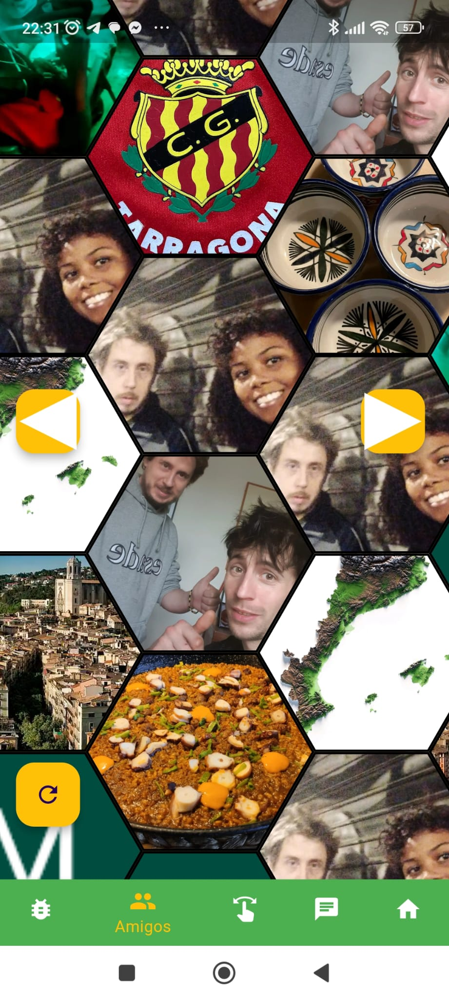
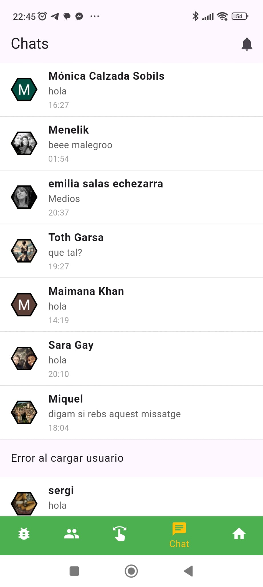

Consejos para aprovechar al máximo Sminos
- Cuida tu selección de imágenes
- Las imágenes son la base de tu perfil. Subir contenido visual atractivo puede ayudarte a destacar dentro del enjambre.
- Sé estratégico con los enlaces y ubicaciones
- Si compartes enlaces, asegúrate de que sean relevantes para tu audiencia.
- Usa la función de ubicación para destacar lugares interesantes o relacionados con tu vida.
- Explora y conecta
- La plataforma está diseñada para facilitar descubrimientos. No dudes en explorar otros perfiles y conectar con personas que compartan tus intereses.
Cómo usar la aplicación
Una vez iniciada la sesión hay 5 pestañas inferiores:
- Colmena: La primera pestaña inferior hay la colmena con todos los usuarios. En ella hay un botón actualizar en la esquina inferior izquierda para volver a cargar los usuarios del enjambre de forma aleatoria

Los botones a la izquierda y derecha en forma de flecha son para ir a la pantalla de encuesta sobre el emoticono que representa a la emoción de los usuarios en un momento determinado

- Amigos: La segunda pestaña inferior es la de los amigos, similar a la primera pestaña pero aquí sólo se muestran los usuarios que estás siguiendo porque te interesan.

En esta pestaña también hay la encuesta cuando se pulsa en las pestañas laterales pero el porcentaje es solo sobre los usuarios que sigues.
En ambas pestañas (Colmena y Amigos) cuando se apreta sobre un hexágono se muestra el perfil completo de ese usuario.

- Selector: En la tercera pestaña inferior hay un selector para distinguir las imágenes que te gustan de las que no con todas las fotos de todos los usuarios, Si el hexágono se desliza hacia la izquierda significa que no te gusta y si se desliza hacia la derecha significa que te gusta.

- Chat: En la cuarta pestaña inferior hay el Chat, donde se muestra el listado de todos los chats y se puede entrar en cada uno de ellos, en el chat se puede compartir un mensaje de texto, una imagen un video o también un mensaje de voz. Los chats no leídos se marcan en verde

- Cuenta: En la quinta pestaña inferior hay la cuenta, dónde se conigura el perfil para mostrar a otros usuarios y hay las pantallas de configuración. Se muestra el hexágono con las imágenes que ha puesto el usuario cambiando por orden aleatorio. En el botón + que hay debajo del hexágono sirve par agregar contenido a la página del perfil, desde ahí se puede añadir un enlace(para que el enlace con un titulo vaya a su url si otro usuario aprete sobre él. Esto sirve para promocionar algo que el usuario desee proporcionar. También desde el botón más se puede agregar texto para el perfil o una ubicación para dar a conocer una ubicación en particular. En el modo gratuito de Sminos sólo se puede agregar un contenido de cada tipo pero si tienes la versión plus puedes agregar más tipos de cada uno.

También para añadir imágenes en el refil propio hay 3 posibilidades que están representados en los botones flotantes de la esquina inferior derecha.
El botón flotante de abajo ue está a la derecha de color verde es para colgar una imagen de la biblioteca del móvil, el que está a la derecha abajo es para hacer una foto directamente con la Camera. Y el botón que esta arriba de este botón sirve para crear imágenes con inteligencia artificial y sólo está disponible si eres suscriptor de Sminos Plus.
Al agregar una nueva imagen, sea de la manera que sea se puede acompañar de un texto, esta imagen podrá recibir me gustas ya sea con el selector o bien cuando otro usuario interactúe con el perfil.
Apartado opciones:
En la parte superior derecha de esta pestaña (Cuenta) se encuentran 3 puntitos, alulsar sobre ellos se abre un drawer para realizar diferentes configuraciones o obtener cierta información del usuario.

Opciones del lateral de la página Cuenta:
- Actualizar a plus
- En este apartado se puede actualizar a Plus, hay dos tipos de suscripciones, el mensual o el anual, el anual es proporiconalmente más barato.